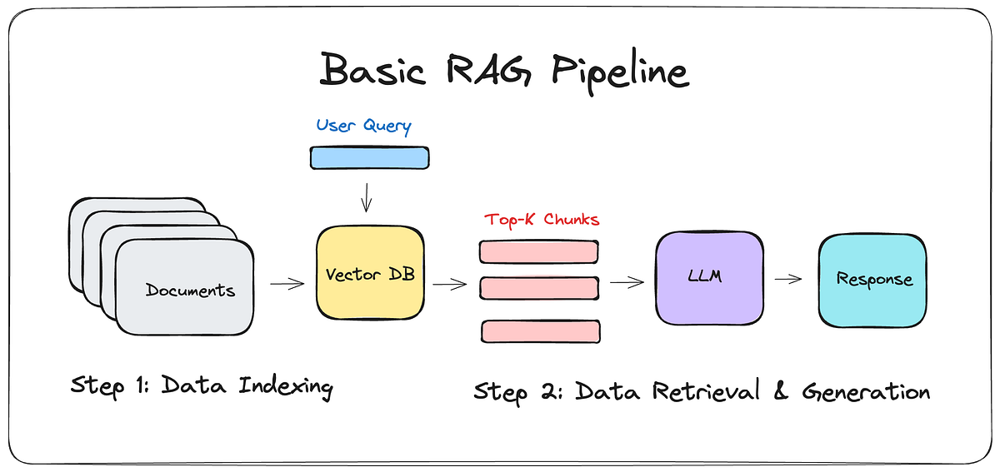

RAG High-Level Architecture

- The Two Core Stages:
- Indexing (Offline): The process of preparing your knowledge base. Documents are loaded, processed, and stored in a searchable format.
- Retrieval & Generation (Real-time): When a user asks a question, the system retrieves relevant information and provides it to the LLM along with the original question to generate an answer.